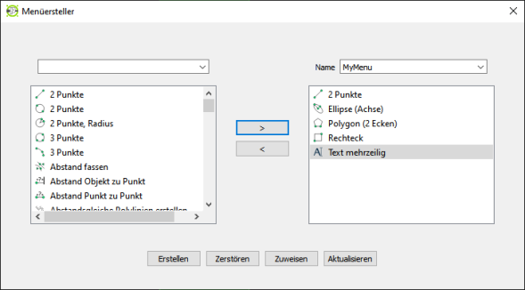
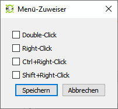

Menüersteller-Widget
Mit LibreCAD können Sie benutzerdefinierte Menüs erstellen, etwa für den schnellen Zugriff auf Ihre bevorzugten Werkzeuge. Diese werden über Maus bzw. Tastatur zugewiesen.

Zuweisen
Mit einem Klick weisen Sie einem Maus-/Tastaturkürzel ein benutzerdefiniertes Menü zu.
Aktualisieren
Anklicken, um Änderungen an einem vorhandenen benutzerdefinierten Menü zu speichern.
Neues benutzerdefiniertes Menü erstellen
- Öffnen Sie Widgets > Menüersteller. Das Fenster des Menüerstellers erscheint.
- Klicken Sie im linken Feld auf ein beliebiges Werkzeug und anschließend auf die nach rechts weisende spitze Klammer (>). Damit wird es in die Menüliste im rechten Feld aufgenommen. Wenn Sie im linken Dropdown-Menü eine Kategorie auswählen, werden die im linken Feld erscheinenden Werkzeuge entsprechend gefiltert.
- Im rechten Feld können Sie die Elemente Ihres neuen Menüs durch Ziehen und Ablegen neu anordnen.
- Wenn Sie Elemente aus Ihrem neuen Menü entfernen möchten, wählen Sie das Werkzeugelement und anschließend die nach links weisende spitze Klammer (<) aus.
- Wenn Sie alle gewünschten Werkzeuge hinzugefügt haben, geben Sie Ihrem neuen Menü im Feld Name einen Namen.
- Klicken Sie auf Erstellen.
- Klicken Sie auf Zuweisen. Das Fenster zur Menü-Zuweisung erscheint.

- Wählen Sie eine Option zur Menü-Zuweisung aus.
- Klicken Sie auf Speichern.
Nach der Rückkehr in den Haupt-Zeichenbildschirm können Sie das Menü mit dem zugewiesenen Maus-/Tastenkürzel einblenden. Wenn Sie Ihr Menü beispielsweise dem Doppelklick zugewiesen haben, erscheint Ihr neues Menü immer dann, wenn Sie irgendwo in der Zeichnung doppelklicken.
Ein vorhandenes benutzerdefiniertes Menü ändern
- Öffnen Sie Widgets > Menüersteller. Das Fenster des Menüerstellers erscheint.
- Wählen Sie aus dem Dropdown-Menü auf der rechten Seite das benutzerdefinierte Menü aus, das geändert werden soll.
- Nehmen Sie die gewünschten Änderungen an den Menüelementen, der Anordnung der Menüpunkte oder den zugewiesenen Kürzeln vor.
- Klicken Sie auf Aktualisieren, wenn Sie alle Änderungen vorgenommen haben, oder verlassen Sie das Fenster, wenn Sie Ihre Änderungen verwerfen möchten.
Ein benutzerdefiniertes Menü löschen
- Öffnen Sie Widgets > Menüersteller. Das Fenster des Menüerstellers erscheint.
- Wählen Sie aus dem Dropdown-Menü auf der rechten Seite das benutzerdefinierte Menü aus, das gelöscht werden soll.
- Klicken Sie auf Zerstören.